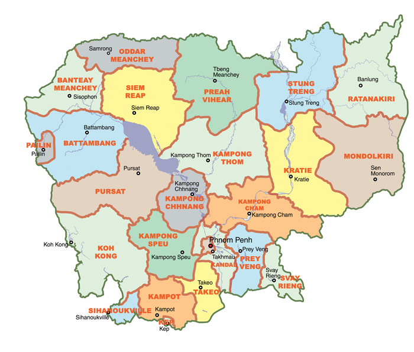

PRATICE1: 03-02-24

Home
|
Contact us
|
About Us
Parargap 1 :
Video To change the way a picture fits in your document, click it and a button for layout options appears next to it. When you work on a table, click where you want to add a row or a column, and then click the plus sign. Reading is easier, too, in the new Reading view. You can collapse parts of the document and focus on the text you want. If you need to stop reading before you reach the end, Word remembers where you left off - even on another device. Video provides a powerful way to help you prove your point. When you click Online Video, you can paste in the embed code for the video you want to add. You can also type a keyword to search online for the video that best fits your document. To make your document look professionally produced, Word provides header, footer, cover page, and text box designs that complement each other. For example, you can add a matching cover page, header, and sidebar. Click Insert and then choose the elements you want from the different galleries. Themes and styles also help keep your document coordinated. When you click Design and choose a new Theme, the pictures, charts, and SmartArt graphics change to match your new theme. When you apply styles, your headings change to match the new theme. Save time in Word with new buttons that show up where you need them.
Testing Unordered List:
- MIS
- Design
- Draw
- Interior Design
- Exterior Design
- BIT
Parargap 2 :
Video To change the way a picture fits in your document, click it and a button for layout options appears next to it. When you work on a table, click where you want to add a row or a column, and then click the plus sign. Reading is easier, too, in the new Reading view. You can collapse parts of the document and focus on the text you want. If you need to stop reading before you reach the end, Word remembers where you left off - even on another device. Video provides a powerful way to help you prove your point. When you click Online Video, you can paste in the embed code for the video you want to add. You can also type a keyword to search online for the video that best fits your document. To make your document look professionally produced, Word provides header, footer, cover page, and text box designs that complement each other. For example, you can add a matching cover page, header, and sidebar. Click Insert and then choose the elements you want from the different galleries. Themes and styles also help keep your document coordinated. When you click Design and choose a new Theme, the pictures, charts, and SmartArt graphics change to match your new theme. When you apply styles, your headings change to match the new theme. Save time in Word with new buttons that show up where you need them.
Testing Ordered List
-
Phnom penh
- Khan Dmun penh
- 7 makara
- Oruusey 2
- Khan toul kort
-
Kompot
- Phnom penh
- Kandal
- Sieam reab
- Kompot
- Kompong cham
- Kandal
Parargap 3 :
Video To change the way a picture fits in your document, click it and a button for layout options appears next to it. When you work on a table, click where you want to add a row or a column, and then click the plus sign. Reading is easier, too, in the new Reading view. You can collapse parts of the document and focus on the text you want. If you need to stop reading before you reach the end, Word remembers where you left off - even on another device. Video provides a powerful way to help you prove your point. When you click Online Video, you can paste in the embed code for the video you want to add. You can also type a keyword to search online for the video that best fits your document. To make your document look professionally produced, Word provides header, footer, cover page, and text box designs that complement each other. For example, you can add a matching cover page, header, and sidebar. Click Insert and then choose the elements you want from the different galleries. Themes and styles also help keep your document coordinated. When you click Design and choose a new Theme, the pictures, charts, and SmartArt graphics change to match your new theme. When you apply styles, your headings change to match the new theme. Save time in Word with new buttons that show up where you need them.
Map
